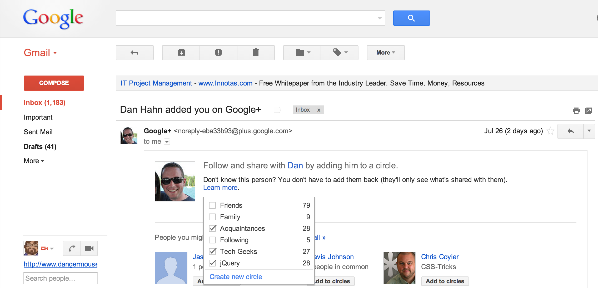
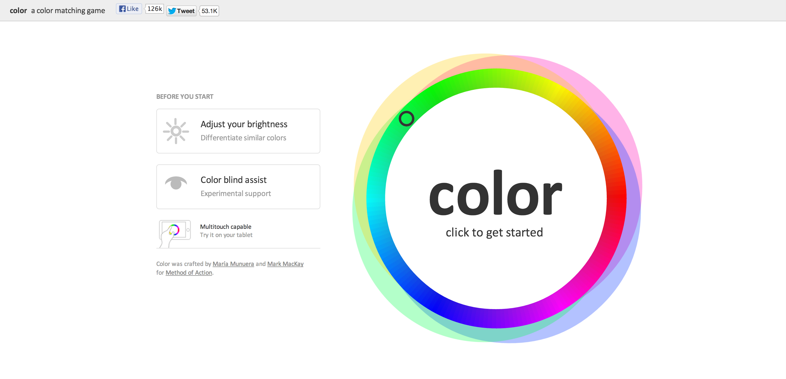

JavaScript
What is JavaScript?
“JavaScript (JS) is an interpreted computer programming language. It was originally implemented as part of web browsers so that client-side scripts could interact with the user, control the browser, communicate asynchronously, and alter the document content that was displayed. More recently, however, it has become common in both game development and the creation of desktop applications.”
(From Wikipedia)
What does that mean?
JavaScript gives life to web pages by way of the interpreter in a web browser. The JavaScript interpreter translates a given script in order to manipulate elements within the page.
Without it web sites would be fairly static.
History of JavaScript
- Created by Brendan Eich (Mozilla CTO)
- Shipped in Netscape Navigator 2.0 in 1995
- Originally Called LiveScript
- Partially inspired by and shares superficial similarities to Java, but intended to appeal to non-programmers, similar to Microsoft's Visual Basic
- Microsoft quickly adopted to gain footing with IE 3 in 1996
- Netscape submitted it to to The European Computer Manufacturers Association (ECMA) in 1996 for standardization. The standardized spec for this language is ECMAscript
- Now the working language of the web, for better or worse
What is it used for?
- Adding dynamic behavior to web pages
- Manipulating and scripting elements on web pages
- Requesting data from a different source (we won't cover this)
- Processing data outside of the web with frameworks like Node.js (we won't cover this)
Examples:
Gmail
check out the sweet hover menu!
color a color matching game
Using a markup language called SVG, JavaScript brings interactive graphics to create a rich experience
 http://color.method.acreveal.js
This presentation is using a JavaScript library. Requires no JS knowledge on my part, but automagically adds razzle & dazzle.
http://lab.hakim.se/reveal-js/What does it look like?
<head>
<script>
function sayHello(name) {
alert("Hello " + name + "!");
}
</script>
</head>
Similar to stylesheets, to keep your code clean & organized, best practice is to include external script
<head>
<link href="path/to/mystylesheet.css" rel="stylesheet" type="text/css"></link>
<script src="path/to/myjavascript.js"></script>
</head>
In most cases stylesheets should precede script tags so that the browser can immediately render layout as intended, whereas scripts adding interactive behavior can take considerable time to load
Lets dive in
Variable assignment: numbers, booleans, strings
var myNumber = 5;
var myBoolean = true;
var myString = "Hello World!";
Variable assignment: arrays, objects
var myNumberArray = [1,2,3];
var myCircleObject = { color: "red", radius: 2};
Take note how variable declarations begin with the var keyword
Control Flow
if statements are used to control the flow of logic in your script. The expression within the parenthesis following the if keyword must evaluate to a boolean value: true or false in order to evaluate
var myGrade = 92;
if (myGrade >= 85) {
alert('You are doing really well in this class!');
} else {
alert('You might want to study up.');
}
The expression in the parenthesis is checking that myGrade is greater than or equal to 85. >, >=, <, <=, == are all logical operators used to compare values.
Arithmetic Expressions
We can perform arithmetic operations on numbers in JavaScript. +, -, /, * are standard operators. Take note on the 8th line that when we add a number to a string (a series of characters), JavaScript coerces the number to a string & appends it.
var exam1 = 92;
var exam2 = 85;
var exam3 = 90;
var average = (exam1 + exam2 + exam3) / 3;
if (average >= 85) {
alert('You are doing really well in this class!');
} else {
alert('You might want to study up. Your average is ' + average + '.');
}
JavaScript also features a Math namespace of advanced operations including sqrt(), pow() and abs().
Objects
Objects are a structured set of primitive values. Let's declare an object named circle with a color and radius property. Then we'll calculate the circumference and update the object with a new property that we can access later.
var pi = 3.14;
var circle = {
color: "red",
radius: 5
};
circle.circumference = 2 * pi * circle.radius;
Note that we've declared a variable called pi for convenience and readability.
Arrays & Iteration
An array is a collection of things. They could be basic values, such as numbers, or more complex data structures such as objects.
Let's declare an array of objects representing report cards. We can access the length of the array. The first element of an array starts at 0 and the last one is at the position of length - 1
var ReportCards = [
{ name: "Dan", Exam1: 85, Exam2: 90, Exam3: 75 },
{ name: "Elijah", Exam1: 65, Exam2: 80, Exam3: 75 },
{ name: "Jennifer", Exam1: 95, Exam2: 80, Exam3: 100 }
];
//Access the 1st element
ReportCards[0];
//Access the name of the 2nd element
ReportCards[1].name;
Now Let's iterate over our ReportCards array and calculate the average final score for each student.
A for loop is composed of multiple statements: the initial position of the iterator (in this case we are using the variable i), the terminating position & finally the incrementor. In most for loops it is only needed to increment by one using the operator i++. This is equivalent to i = i + 1.
for (var i = 0; i < ReportCards.length; i++) {
var card = ReportCards[i];
card.final = (card.Exam1 + card.Exam2 + card.Exam3) / 3;
}
Functions
Functions encapsulate a series of statements to represent a particular behavior. Functions become a critical mechanism when working with a large code base because they allow behaviors to be reusable.
function calculateAverage(numbers) {
var aggregate = 0;
for (var i = 0; i < numbers.length; i++) {
aggregate = aggregate + numbers[i];
}
return aggregate / numbers.length;
}
var set_of_numbers = [5, 10, 15];
calculateAverage(set_of_numbers);
var another_set_of_numbers = [100, 130, 150, 170, 200];
calculateAverage(another_set_of_numbers);

jQuery
What is jQuery?
jQuery is a cross-browser JavaScript library originally developed by John Resig. It simplifies DOM (Document Object Model) manipulation and standardizes the API between different browser environments. jQuery has gained incredible popularity for its ease of use and expressive syntax.
Note: The DOM just means HTML accessible by JavaScript. Its effectively a snooty way of saying HTML when its live and programmable in a web browser. An API just stands for Application Programming Interface. It means 'The way something can be programmatically accessed.'
Selectors
jQuery offers an especially convenient way to select HTML elements by way of CSS selectors, as well as creating HTML fragments on the fly.
//select all divs with the class button
$('div.button');
//select all table data cells whose parents are a table row with class even
$('tr.even > td');
//select by id (should only return one element)
$('#reportcards');
$() is jQuery's magic function. jQuery sacrifices verbose syntax in favor of short, expressive statements. One of the jQuery framework's design decisions is to have a magic $() function that is context aware to the arguments being passed in. In this case we are passing in a string representing a CSS selector, so jQuery knows to look for elements in our web page.
DOM Fragments
Let's create a document fragment composed of an HTML string. We will then use jQuery's append() method to add it to our document body.
var paragraph_fragment = $('Hello World!
');
$('#paragraph-container').append(paragraph_fragment);
jQuery's magic $() function recognized that our string represents HTML instead of a CSS selector, so it knows to create a document object which we can further manipulate.
paragraph_fragment.addClass('red-border');
We added the class 'red-border' to our paragraph tag.
Interactive Modules
Let's create a carousel out of a set of images. We'll add the images to our HTML manually and then leverage a jQuery plugin to enhance the page with interactive behavior.
-

-

-

-

Adding our jQuery module
We'll want to reference the jQuery resource in our document and initialize it once the document is ready.
-
-
-
-
Expand your knowledge
- Code Academy: http://www.codecademy.com/tracks/javascript
- JavaScript the Good Parts: http://shop.oreilly.com/product/9780596517748.do
- jQuery Documentation: http://api.jquery.com/
Happy Scripting
Elijah Meerson, Software Engineer at AppNexus. @elimeerson
Also I'm on Google+